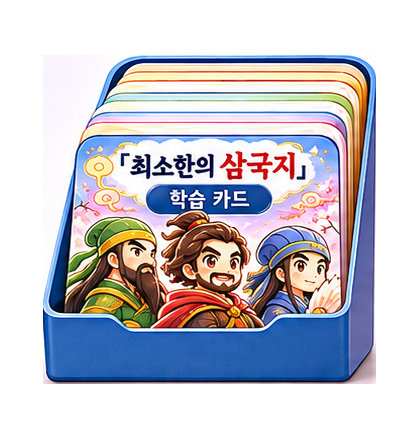
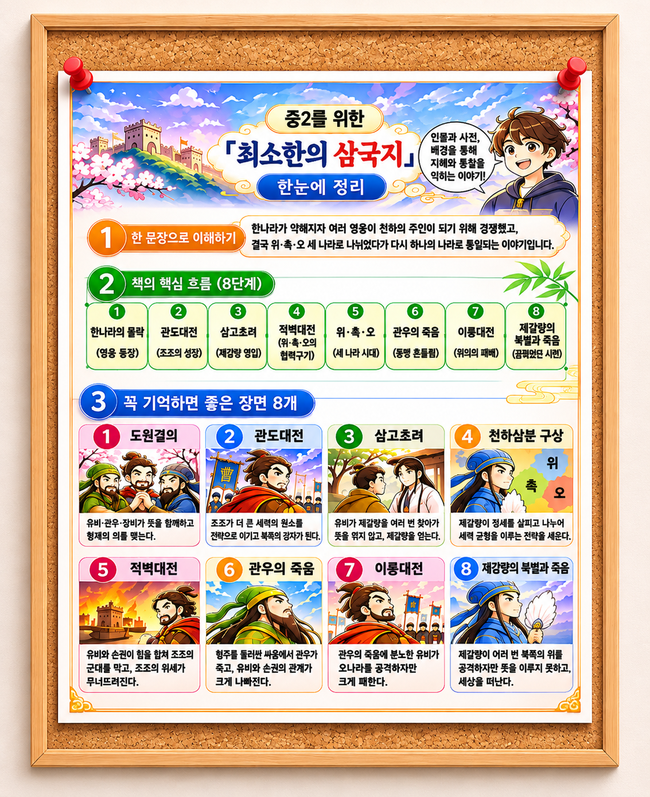
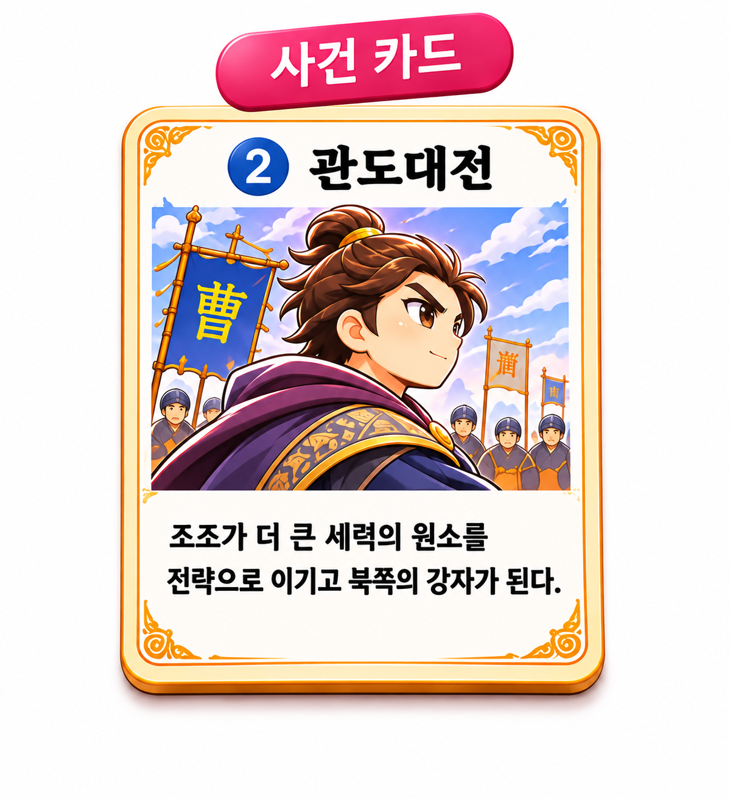
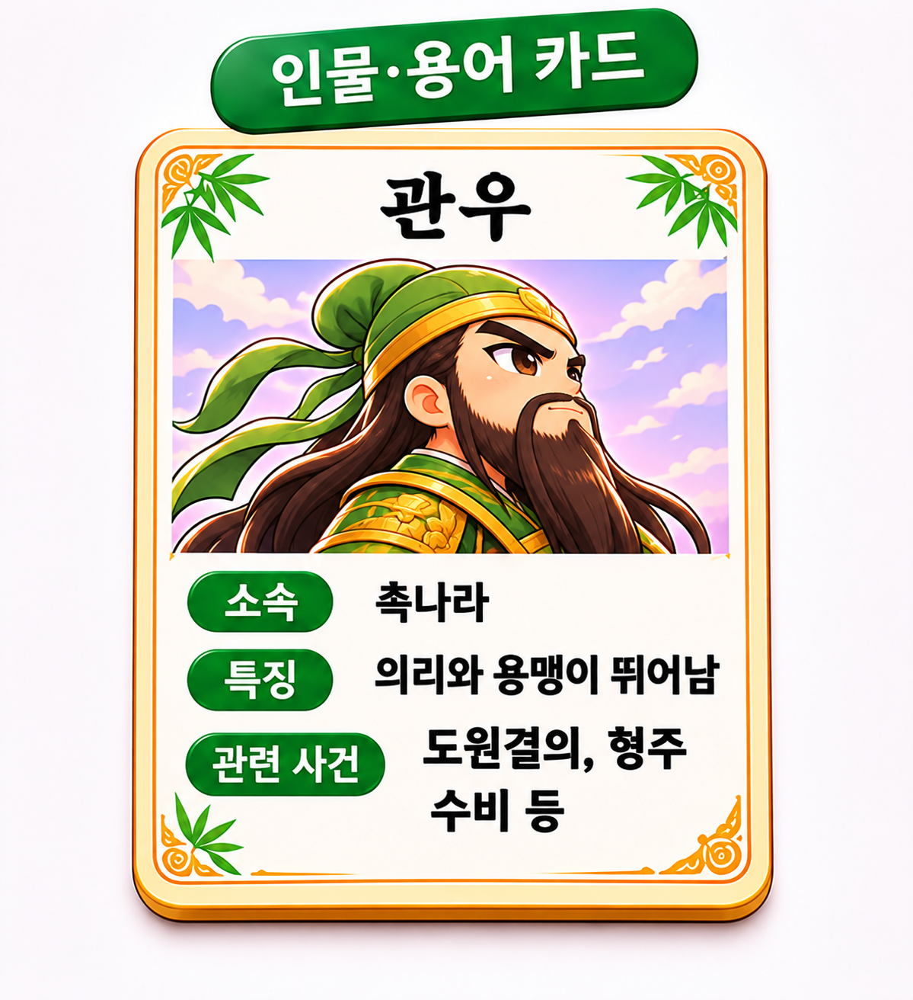
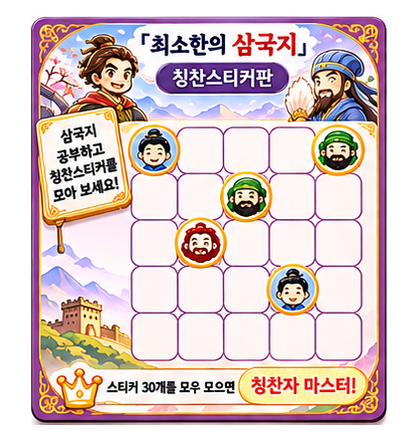
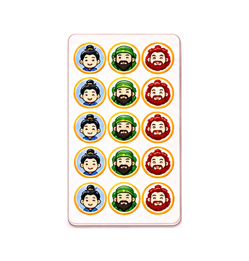
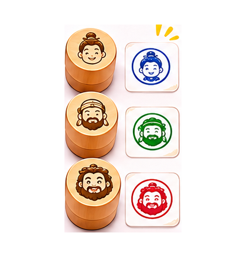

학습 카드
인물 · 사건 등 주요 내용을 카드로 학습

EDUCATIONAL CONTENTS
중학교 2학년 학생이 어려운 삼국지의 인물과 사건을 쉽고 재미있게 이해하도록 시각적인 학습 자료를 제작했습니다.
등장인물과 사건이 많아 핵심 내용을 기억하기 어렵고, 한 장의 이미지에 많은 정보를 담으면 가독성이 떨어질 수 있었습니다.
핵심 사건 8개와 주요 단어 20개를 선정하고, 벽면 포스터와 개별 학습카드로 나누어 학습 목적에 맞게 디자인했습니다.
ChatGPT

인물 · 사건 등 주요 내용을 카드로 학습

삼국지의 주요 사건 8개를 그림과 이야기로 학습

주요 인물의 특징과 핵심 용어를 쉽게 이해하는 학습

학습 성취를 기록하고 보상을 모으는 활동

학습 목표 달성에 따라 붙이는 보상 스티커

학습 완료·정답·칭찬을 표시하는 참여형 도구
주요 인물을 친근하고 역동적으로 표현
역사적 분위기를 살린 활기 있는 컬러와 아이콘
가독성과 몰입감을 높이는 제목 본문 서체 구성